大家好：
在這裡跟所有會員朋友報告這個好消息，AutoCAD顧問論壇目前推出「外掛程式」，外掛程式的設計方向為「通用軟體」構想，何謂「通用軟體」呢？簡單說就是可以滿足各行各業的基本工作需求。舉凡日常工作中用到的「繪圖」、「設定」、「圖塊」、「文字」、「標註」、「查詢」、「配置」等工具，透過程式二次開發有效「節省繪圖步驟」及「提升工作效率」。
👇ACADAdviser外掛程式 - Q&A
https://www.autocad-tw.com/t14813-topic
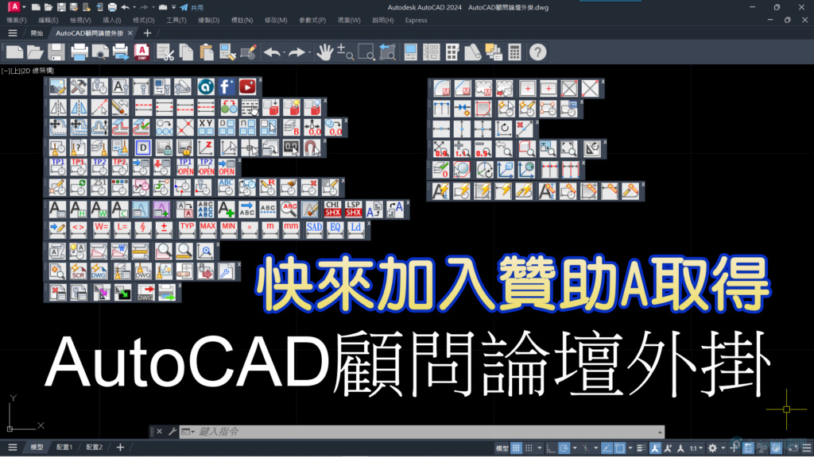
因為贊助會員之「外掛程式」採用贊助贈予使用，外掛程式得以比較平價。
若是以市面上外掛程式軟體行情，外掛程式價格就會太貴，所以我們不採用這方案。
而這二者各有優缺點，像市面上外掛程式採序號買斷，也就是用戶可自行移除重裝，真正達到永久使用之定義。
所以我們的外掛程式「授權轉移」服務，是以贊助會員期限來界定。
一、程式說明：
1.論壇推出「ACADAdviser外掛程式」（僅適用微軟作業系統），會員朋友一套 NT4,000元（優惠一年轉移授權服務），加入「方案A - 贊助會員」獲得「ACADAdviser外掛程式」。
二、安裝說明：
1.「ACADAdviser外掛程式」僅能安裝授權在「一部電腦」的一套「AutoCAD版本」之中。
2.目前可支援 AutoCAD 2016 以上版本（Windows作業系統），使用者可以選擇常用的AutoCAD版本進行「安裝路徑偵測步驟」。
3.用戶請先完成 >> ACADAdviser外掛程式 - 安裝路徑偵測步驟(點我)。
4.用戶執行 「安裝路徑偵測步驟」完畢後，接著可以安裝「ACADAdviser外掛程式」到用戶的電腦。
5.加入「方案A - 贊助會員」一年期限內，每一套「ACADAdviser外掛程式」享有免費「軟體更新」服務及免費「授權轉移」服務。
6.加入贊助後只要「電腦不重灌」或「AutoCAD不重新安裝」，用戶可以「永久」使用外掛程式（無使用期限）。
7.用戶（贊助會員合約期限內）若要「電腦重灌」或「AutoCAD重新安裝」，必須先「移除ACADAdviser外掛程式」，然後提供回傳「移除訊息畫面」，確認移除後才可以「轉移授權」。
註：用戶若是無法提供「移除訊息畫面」，恕不提供「授權轉移」服務，請用戶們斟酌是否購買。另外，建議安裝在新的電腦設備，比較不會有電腦死當故障而無法「移除ACADAdviser外掛程式」之風險。
※ACADAdviser外掛程式 - Q&A：
https://www.autocad-tw.com/t14813-topic
■目前「AutoCAD顧問 - ACADAdviser外掛程式」，功能可分為七大類別：
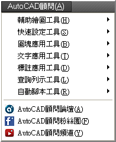
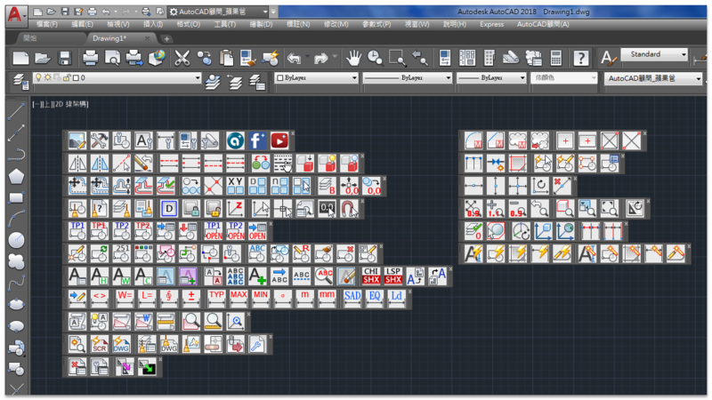
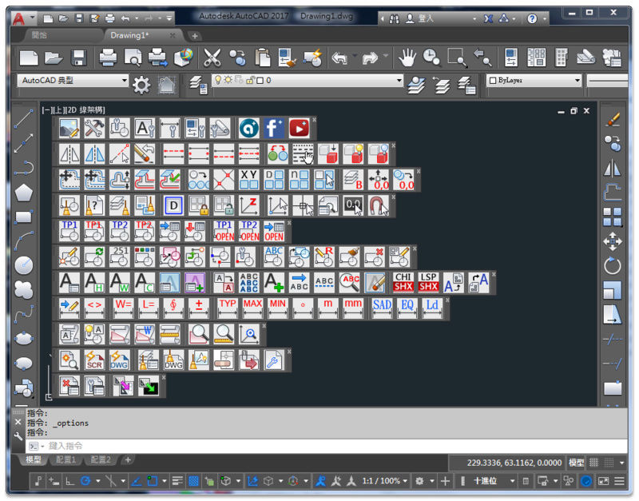
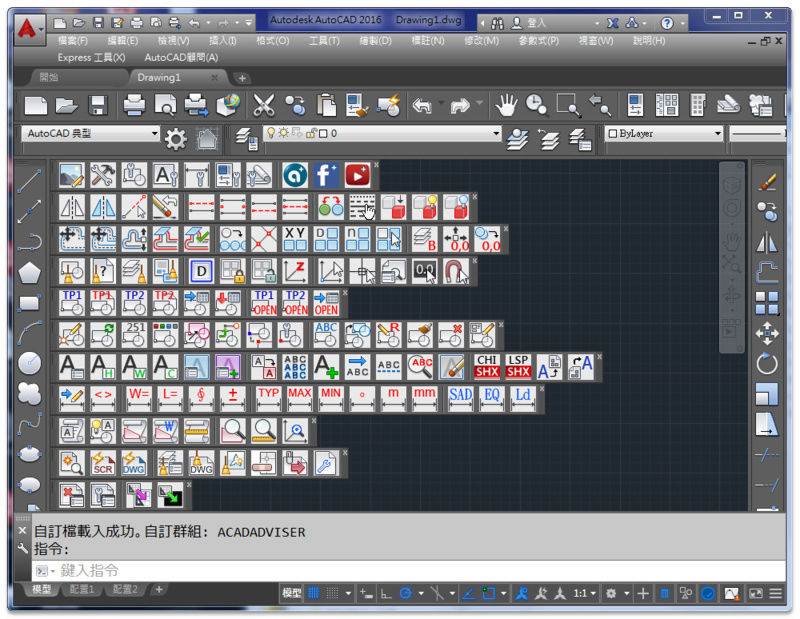
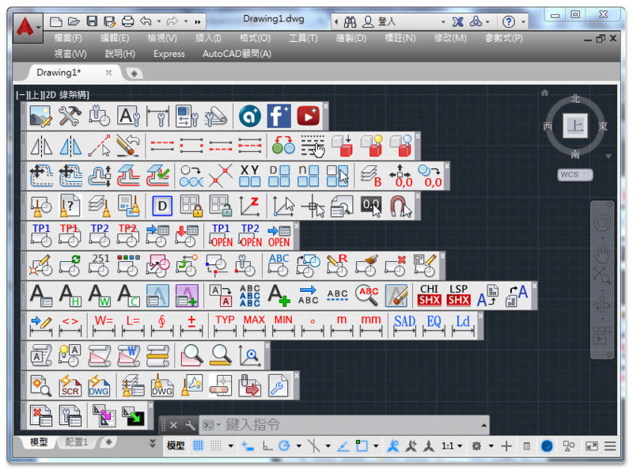
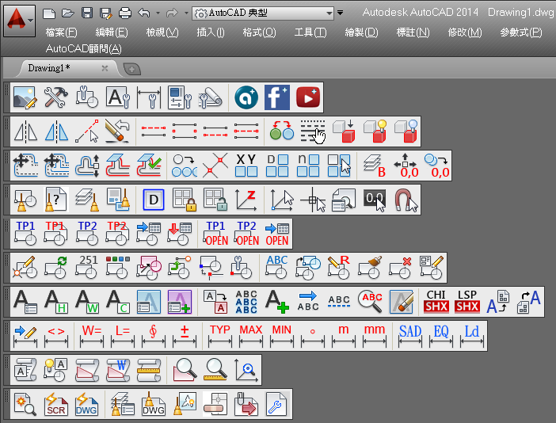
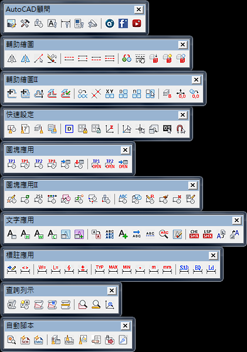
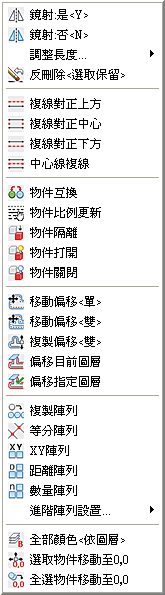
影片展示：
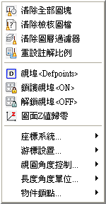
影片展示：
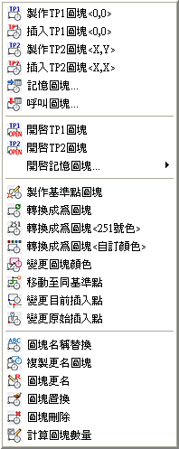
影片展示：
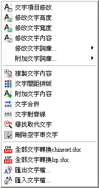
影片展示：
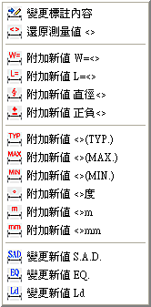
影片展示：
影片展示：
影片展示：
※有興趣了解及使用的會員朋友，可以下載展示影片方便觀看及了解！
也請記得「投票」及「回文」提供寶貴意見給我們。
[下載]AutoCAD顧問外掛程式展示影片.zip
下載載點： https://www.box.com/s/qejhu047qg8smwbs6dbt
[下載]Avi影片撥放程式.zip
下載載點： https://www.box.com/s/27vdoa0u7lqfd8wzy8dx
2023-04-08補充：
👇論壇外掛一檔多圖框多配置出圖PDF說明
1️⃣SetPlotPage指令(STP):匯入樣板檔中的頁面設置。
2️⃣Dwg2Pdf指令(DP):目前圖檔快速出圖PDF檔(Pdf檔名依照dwg檔名稱)。
2️⃣Dwg2PdfLa指令(DPLa):目前圖檔快速出圖PDF檔(Pdf檔名依照圖塊圖框圖層名稱)。
3️⃣POP指令:開啟樣板檔修改樣板檔中的頁面設置(模型三組、配置三組)。
📢外掛程式快速出圖PDF的二個大原則:
1.正確圖框大小(圖塊或外部參考)，範例圖框使用A1圖紙尺寸(841x594)。
2.正確出圖頁面設置(包含圖紙大小、出圖比例及出圖型式表)。
📢多個DWG檔大量批次出圖需使用SCR腳本作業
==============================
👇模型空間出圖語法:
TILEMODE 1 SetPlotPage 1 Dwg2Pdf A1 I A1圖框-MS
👇腳本說明：
TILEMODE 1 :表示: 切換到模型空間
SetPlotPage 1 :表示: 匯入指定【模型頁面設置(1)】
Dwg2Pdf A1 :表示: 出圖PDF:A1圖紙
I A1圖框-MS :表示: I(輸入) A1圖框-MS(圖框圖塊名稱)
==============================
👇配置空間出圖語法:
TILEMODE 0 SetPlotPage 3 Dwg2Pdf A1 I A1圖框-PS
👇腳本說明：
TILEMODE 0 :表示: 切換到配置空間
SetPlotPage 1 :表示: 匯入指定【配置頁面設置(1)】
Dwg2Pdf A1 :表示: 出圖PDF:A1圖紙
I A1圖框-PS :表示: I(輸入) A1圖框-PS(圖框圖塊名稱)
==============================
註：出圖圖框圖塊名稱，可更改為自己的圖框圖塊名稱。
👇贊助A會員請直接前往下載外掛一檔多圖框多配置出圖PDF程式工具
https://www.autocad-tw.com/t27339-topic
2023-01-20補充：
👇論壇外掛XRecCirExtendTrim工具說明
1️⃣️RecExtendTrim指令：多重_外延伸+內修剪(RET)
2️⃣RecCirExtend指令：多重_外延伸(RRE)
3️⃣RecCirTrimIO指令：多重_內外修剪(RRT)
4️⃣RGap指令：設定延伸容許間距(預設值50)
👇贊助A會員請直接前往下載外掛RecCirExtendTrim工具
https://www.autocad-tw.com/t27024-topic
2023-01-01補充：
👇論壇外掛XclipObjects工具說明
1️⃣️XclipCha指令：多重_局部物件轉換(XcC)
2️⃣XclipMul指令：多重_局部物件縮放(XcM)
3️⃣XclipObj指令：單一_局部物件縮放(XcO)
4️⃣XclipRec指令：矩形_局部物件縮放(XcR)
👇贊助A會員請直接前往下載外掛XclipObjects工具
https://www.autocad-tw.com/t26959-topic
2022-12-03補充：
「ACADAdviser外掛程式」「配置」工具新增功能囉，趕快來看操作教學吧！
註：目前可以支援到AutoCAD 2023 及未來 AutoCAD 2024 版本～
WblockTBLK指令(快捷鍵WT)：目前圖面中拆圖DWG圖檔(基準框(圖塊)及建立圖層名稱)。
原則1.需要有基準框(圖塊)範圍
原則2.拆圖時基準框需分圖層名稱
👇ACADAdviser外掛程式 新功能(一)圖檔拆圖
WblockPLOT指令(快捷鍵WP)：目前圖面中批次出圖(基準框(圖塊)及建立頁面設置)。
原則1.需要有基準框(圖塊)範圍
原則2.批次出圖須先建立頁面設置
👇ACADAdviser外掛程式 新功能(二)批次出圖
👇注意：批次出圖外掛程式，須遵照以下規則，然後即可享受批次出圖的效率
規則1.正確圖框大小(A1cm=84.1x59.4)
規則2.建立出圖頁面設置(可依公司印表機需求建立)
2022-09-25補充：
👇新增過濾指令：
SBL 過濾選擇圖層物件
SBM 過濾選擇多行文字物件
SBT 過濾選擇單行文字物件
SBK 過濾選擇圖塊物件
SBH 過濾選擇填充線物件
SBD 過濾選擇標註物件
SCC 過濾選圓
STT 過濾選單行文字
SMM 過濾選多行文字
SBB 過濾選圖塊
SHH 過濾選填充線
SDD 過濾選標註
SLL 過濾選線
SPP 過濾選聚合線
👇新增巨集指令：
ZA指令：縮放全部
ZD指令：動態縮放
ZE指令：縮放實際畫面
ZS指令：視窗拉近
ZX指令：視窗拉遠
ZW指令：縮放物件
ZZ指令：縮放回前次視窗
MM指令：移動前次選集物件
MI指令：鏡射前次選集物件
EEE指令：刪除前次選集物件
CC指令：複製前次選集物件
SS指令：比例前次選集物件
LK指令：線追蹤
L0指令：從0,0點畫線
XD指令：偏移建構線
F0指令：多重圓角_半徑=0
FM指令：多重圓角
QN指令：不存檔關閉
👇新增數字鍵指令：
0 指令：切換空間
1 指令：模型空間
2 指令：配置空間
3 指令：出圖
4 指令：出圖預覽
5 指令：發佈
6 指令：執行腳本
7 指令：頁面設置
8 指令：圖面另存
9 指令：選項
👇使用SCR腳本開啟或關閉全部工具列：
輸入SCRIPT指令，選擇SCR腳本檔
開啟ACADAdviser工具列.scr
關閉ACADAdviser工具列.scr
ACADAdviser外掛程式 - 轉移授權(一年版)
用戶電腦及AutoCAD都不異動下，論壇外掛程式及可永久使用無期限，如果要換電腦使用，一年內可以有轉移授權服務！
註：不得自行移除外掛或重安裝AutoCAD，會導致外掛程式授權失效。
[下載]顧問網站工具說明.pdf
https://www.autocad-tw.com/t14948-topic
[下載]輔助繪圖工具說明.pdf
https://www.autocad-tw.com/t14950-topic
[下載]圖塊應用工具說明.pdf
https://www.autocad-tw.com/t14951-topic
[下載]查詢列示工具說明.pdf
https://www.autocad-tw.com/t14952-topic
[下載]快速設定工具說明.pdf
https://www.autocad-tw.com/t14953-topic
[下載]自動腳本工具說明.pdf
https://www.autocad-tw.com/t14954-topic
[下載]文字應用工具說明.pdf
https://www.autocad-tw.com/t14955-topic
[下載]標註應用工具說明.pdf
https://www.autocad-tw.com/t14949-topic
[下載]自定別名(pgp)、快捷鍵說明.pdf
https://www.autocad-tw.com/t15151-topic
[下載]配置應用工具說明.pdf
https://www.autocad-tw.com/t21820-topic
※贊助會員說明：
https://www.autocad-tw.com/t2715-topic
※贊助付費方式：
https://www.autocad-tw.com/t2715-topic#48451
2016-11-15補充：
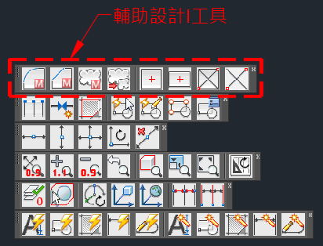
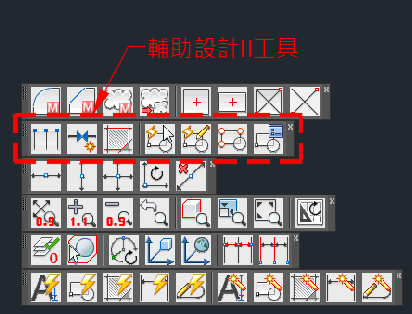
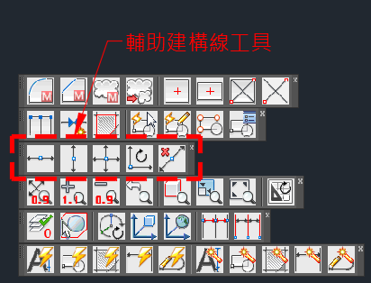
「ACADAdviser外掛程式」新增功能，加入「輔助設計I」工具
「ACADAdviser外掛程式」新增功能，加入「輔助設計II」工具
「ACADAdviser外掛程式」新增功能，加入「輔助建構線」工具
「ACADAdviser外掛程式」新增功能，加入「輔助視窗」工具
「ACADAdviser外掛程式」新增功能，加入「輔助巨集」工具
「ACADAdviser外掛程式」新增功能，加入「輔助過濾」工具
趕快來看操作影片示範教學～
https://www.autocad-tw.com/t20681-topic
▼AutoCAD顧問外掛程式 - 輔助設計II工具操作
https://www.autocad-tw.com/t20682-topic
https://www.autocad-tw.com/t20683-topic
https://www.autocad-tw.com/t20687-topic
https://www.autocad-tw.com/t20688-topic
https://www.autocad-tw.com/t20689-topic
2016-06-14補充：
「ACADAdviser外掛程式」新增功能囉，加入了「配置」工具，趕快來看操作教學吧！
註：目前可以支援到 AutoCAD 2026 版本～
https://www.autocad-tw.com/t17740-topic